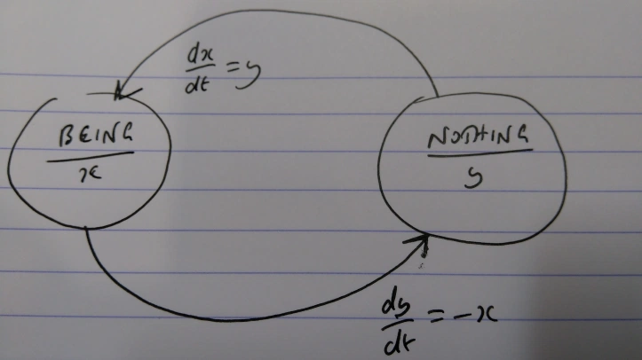

10 Hegel
Lefebvre: in contrast to Feurbach’s humanism, which is in fact a myth of a naturalism, Hegel’s idealism “saw that man is not given biologically, but produces himself in history, through life in society, that he creates himself in a process.”
10.1 Science of Logic
Mathematical Interpretation
Wright
Hegel’s Science of Logic, written in the early 1800s, is a difficult book, to say the least. One difficulty is that Hegel’s project seems fantastical: he aims to discover the fundamental structure of everything from pure reflection alone. Materialists and empiricists will rightly hesitate. Another difficulty is Hegel’s methodology, which is shocking: doubting even Rene Descartes’ ‘I’ he claims to start his enquiry with zero assumptions – and yet derives multiple propositions. How is it possible to reason with no axioms or inference rules? Another difficulty is Hegel’s language: difficult ideas often necessitate technical terms and complex locutions, but Hegel twists the reader up, down, left and right and the effect is dizzying. So it’s a difficult book, and one which most readers, over the centuries, have either never picked up, or quickly put down.
Hegel’s beginning is irreducibly dynamic in the sense that the core concepts – pure being and pure nothing – are not merely concepts but actual occurrent processes (that we intuit by self-referential philosophical reflection).
I will begin to apply the mathematical language of the calculus to represent change. We simply have no choice but to use currently available languages to describe the phenomena, but, of course, the phenomena isn’t those languages. Change implies a sequence of different ‘states’ that the thing that changes exhibits.
Pure being changes positively with respect to itself; in consequence, pure being increases exponentially. Pure nothing changes negatively with respect to itself; in consequence, pure nothing decreases exponentially. The coming-to-be of pure being and the ceasing-to-be of pure nothing are identical once we remove the idea of an arrow of time.
So we can make sense of Hegel’s startling claim that pure being and pure nothing are ‘the same’ and also ‘they are not the same’. They are not the same because pure being is about existence, whereas pure nothing is about non-existence, and hence they self-interact in different ways (pure being affirms itself, pure nothing denies itself). But they are also the same because the shape of these self-interactions are isomorphic. Their behaviour is identical.
These different behaviours are isomorphic to each other, via the reciprocal map, \(f(x)=1/x\). Notably, the map is an involution, i.e. \(f(f(x))=x\), and therefore is its own inverse.
In the language of calculus, the coming-to-be of pure being speeds towards infinity. In this sense, pure being explodes. For example, any natural or mechanical systems (which we cannot properly talk about here, but only mention by analogy) undergoing exponential growth quickly fall apart. They could only exist, at best, for a short period of time. Similarly, the ceasing-to-be of pure nothing collapses to zero. Again, any natural or mechanical systems that obeyed this exponential law of decrease would quickly cease and become entirely inert. In this sense, pure nothing implodes. In both cases, the systems ‘vanish’, either by exploding or imploding. So although pure being and pure nothing are present at the metaphysical bedrock, and imply each other, as self-referential systems they are unstable. They cannot permanently exist in their pure states of self-reflection. Thought contemplating itself can never catch its own tail, but will endlessly chase it, caught forever in a self-referential loop. As thought contemplating nothing it can never eradicate its own existence, and therefore forever sustains some residual of thought in the self-referential loop.
We can now, at last, explicate Hegel’s ‘causal’ sense of vanishing into an opposite. Consider pure being in the state epsilon close to zero (where we imagine epsilon is a really small magnitude as close to zero as we wish). This state is arbitrarily close to the asymptote of pure nothing. But since being is a coming-to-be this ’empty’ state rapidly vanishes towards the state of pure being (infinity). More prosaically: when we try to contemplate absolutely nothing there’s an irreducible element of our own existence, which when noticed, takes over, and flowers into pure being.
We can make sense of Hegel’s beginning by interpreting this passage as essentially talking about isomorphic positive and negative feedback loops. Hegel’s philosophical reflection asks us to perform the following mental exercise: shed all your knowledge and assumptions, including your own existence as an individual person and simply contemplate the existence of thought. When you do that you’ll enter a self-referential feedback loop. This mental state has paradoxical properties (especially from the point-of-view of formal logic). First, it seems like you are contemplating pure being (that is existence itself) but also it seems like you are contemplating pure nothing (zero content, or non-existence). Both points-of-view make sense. But the interpretations are unstable, and don’t settle down, and spontaneously flip back-and-forth. And, furthermore, what the feedback loops seem to strive towards – the state of pure being or pure nothing – can never be reached. In this sense, they cannot exist, both ‘logically’ and ‘causally’.
Since the beginning doesn’t make sense and cannot exist it therefore cannot really be the beginning after all. The beginning must be something else. At this point Hegel introduces the concept of ‘sublation’.
Becoming is the sublated unity of being and nothing. They no longer self-relate but ‘interpenetrate’ each other

Figure: Becoming is the sublated unity of being and nothing. They no longer self-relate but ‘interpenetrate’ each other
The unity of being and nothing expressed as a system of coupled first-order differential equations. We need to refer to these equations. I’ll call them ’Hegel’s equations‘, and sometimes ’Hegel’s contradiction‘.
‘Determinations are of unequal value’ in the straightforward sense that, in general, \(dx/dt\) is not equal to \(dy/dt\).
Hegels Sublation:
Grasped as thus distinguished, each is in their distinguishedness a unity with the other. Becoming thus contains being and nothing as two such unities, each of which is itself unity of being and nothing; the one is being as immediate and as reference to nothing; the other is nothing as immediate and as reference to being; in these unities the determinations are of unequal value
The coupled system mirrors Hegel’s natural language description of sublation remarkably well. The reference is such ‘that is to say, it passes over into it‘. In the coupled system, we have a ‘substance’ that actually flows from being into nothing, and the ‘substance’ leaves nothing and enters into being.
Now we also have a typically Hegelian claim: becoming is both a ‘ceaseless unrest’ and a ‘quiescent result’. So the ‘vanishing’ that previously implied that pure being and pure nothing could not exist, now, in this sublated state, ‘vanishes the vanishing itself’ such that we now have ceaseless unrest that paradoxically collapses into a stable result (that presumably doesn’t vanish by either exploding or imploding).
Hegel’s equations are equivalent to two second-order differential equations that, in terms of their motion, are independent (although they are coupled in terms of their initial conditions). Now we have the acceleration of being (or nothing) changing negatively with respect to itself.
We need to solve the second-order linear differential equations. Since this deduction applies to both being (x) and nothing (y) I’ll just solve for the temporary variable (z):
In this mathematical interpretation of becoming, being changes according to cos(t) and nothing changes according to -sin(t). Being and nothing oscillate between -1 and 1, forever. When being realises its maximum (at an absolute value of 1) then nothing is at its absolute minimum of 0. When nothing realises its maximum, then being is at its minimum. What one ‘gains’ the other ‘loses’, but neither ‘side’ ever wins.
What is being gained, and what is being lost? It’s tempting to introduce familiar physics-based concepts, such as amplitude or energy etc. But Hegel employs the term ‘indeterminate being’, which is the status of pure being and pure nothing prior to their sublation. I will use the slightly more evocative term ‘substance’. Being and nothing continually exchange their substance with one another: at one time being is more substantial, at another time nothing is. Define the total substance contained within the unity as the sum of the squares of x and y (to handle the negative values). As soon as we do that, we immediately see that Hegel’s equations instantiate a simple conservation law:
\[x^{2} + y^{2} = cos^{2}t + sin^{2}t = 1\]
We can think of this perpetual trade-off between being and nothing as either eternal conflict, or an eternal dance of co-operation. Hegel, more simply, describes it as ‘a ceaseless unrest’. The union of being and nothing is unstable, any equilibrium is immediately undermined, and the opposing concepts remain in perpetual contradiction.
We’ve shown that Hegel’s contradiction does generate ceaseless unrest. But in typically Hegelian fashion, becoming is not merely a ‘ceaseless unrest’ but also a ‘quiescent result’. Becoming as a ‘quiescent result’: being and nothing always vary but are bounded. The 2-D state-space of Hegel’s equations is a perfect circle.
Hegel’s equations, that is the unity of being and nothing, trace a perfect circle in state-space. Becoming is indeed ceaseless unrest, but that unrest is always bounded. Pure being, which merely self-relates, explodes, and pure nothing, which also self-relates, implodes; in this sense, neither can exist. In contrast, Hegel’s equations define a stable dynamic system: their sublated unity neither explodes or implodes, but is a ‘quiescent result’ that reproduces itself indefinitely.
In fact if we – somehow – managed to be outside observers and ‘measured’ the total substance of becoming we would notice no change whatsoever. Hegel’s equations, as we’ve seen, obey a conservation law. The ceaseless unrest on the inside conserves the total substance and so, on the outside, we would observe perfect calm, a truly quiescent result. So becoming both preserves its identity over time (conservation of substance) and changes (the internal oscillation).
The unity of being and nothing determines a new kind of whole: a dynamic and contradictory unity. Pure being and nothing ‘sink from their initially represented self-subsistence’ and are turned into ‘moments’ of a bigger whole where they are ‘distinguished but at the same time sublated’.
Hegel resolves this paradox by a (logical? causal?) operator he calls sublation. Hegel remarks that sublation is ‘one of the most important notions in philosophy’. A sublation, in typically Hegelian fashion, both preserves or maintains and puts an end to. Where did this operator come from? I think Hegel would argue that this operator is observable within the phenomenon itself.
Becoming is the name Hegel gives to the sublation of pure being and pure nothing. Suddenly, everything changes: we ‘put an end to’ pure being and pure nothing as self-referential concepts (as uncoupled differential equations); and now they reciprocally refer to each other (as coupled differential equations). So each presupposes the other, and neither is a unique starting point. There cannot be being without nothing, or nothing without being. The logical paradox is resolved.
In consequence, the unity of being and nothing determines a beginning that does make sense and can exist: the beginning is an irreducibly dynamic and contradictory unity.
According to Hegel the fundamental structure of becoming must be present, as both a logical and natural necessity, in anything that exists at all.
My mathematical interpretation covers only chapter 1 of Hegel’s monumental and obscure Science of Logic. In subsequent chapters, Hegel derives the necessary existence of further categories, such as quality, finitude, infinity, multiplicity, quantity, measure and the syllogisms of ‘ordinary’ logic. We should explore how far this new, mathematical interpretation of Hegel’s opening chapter extends to his later chapters. At some point, the semantics of Hegel’s metaphysical theory and the semantics of systems of differential equations must surely break down. But who knows? We might yield more insights into Hegel’s philosophy by pursuing this project. Regardless, Hegel – at least as far as he is concerned – derives and critiques the Kantian categories from his assumption free starting point, and, if this derivation is successful, then that would constitute evidence that fundamental aspects of our cognition are the manifestation of the contradiction between being and nothing.
Those with a physics background will have already noticed that Hegel’s equations imply that the unity of being and nothing instantiates simple harmonic oscillators. Simple harmonic oscillators are the bread-and-butter of physics courses simply because harmonic oscillation is ubiquitous in nature, both in the microcosm (quantum) and the macrocosm (general relativity). As above, so below. Quantum field theory, the currently dominant theory of fundamental particles, is essentially simple harmonic motion taken to increasing levels of abstraction. In other words, simple harmonic motion is indeed a fundamental structure that appears, again and again, at all levels of physical reality.
Hegel’s contradiction is not merely simple harmonic motion, but rather a 2-D, system of coupled harmonic oscillators with additional properties that relate to complex analysis and holomorphic functions. But here let’s simply note the following: it’s utterly remarkable that Hegel’s psychedelic, assumption-free starting point, which is resolutely conceptual and abstract – and makes no reference to physical reality or empirical knowledge whatsoever – nonetheless, according to the interpretation developed here, implies a structure of ‘becoming’ that is equivalent to the fundamental structure found everywhere in physical reality.
Physicists might not ask, and perhaps could not answer, why oscillatory motion is ubiquitous in nature. Philosophy, in particular Hegel’s metaphysics, in contrast, provides a candidate explanation of this empirical phenomenon: according to Hegel, everything that exists necessarily is a unity of being and nothing and therefore – according to the mathematical interpretation developed here – must exhibit harmonic motion.